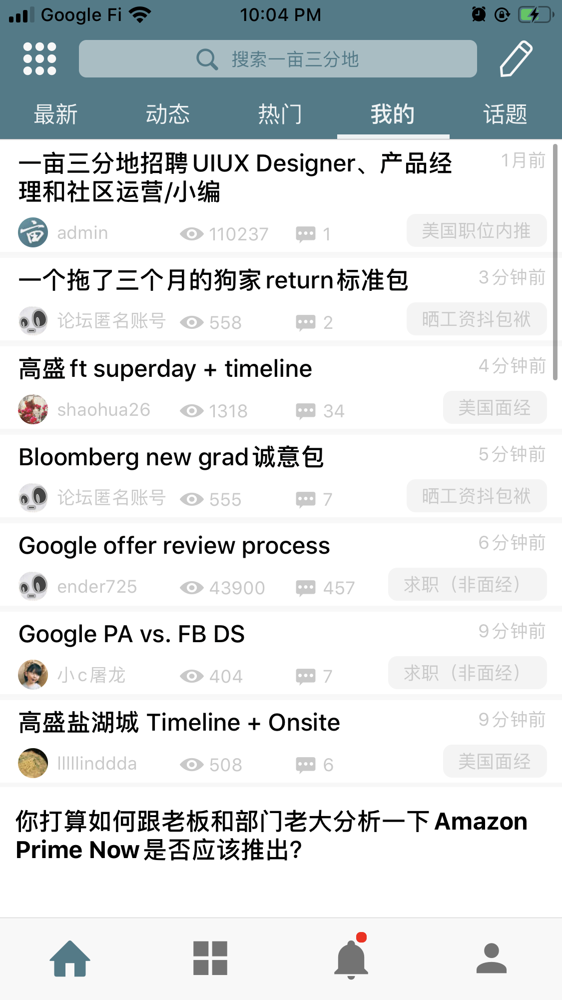
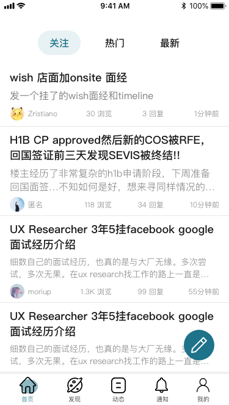
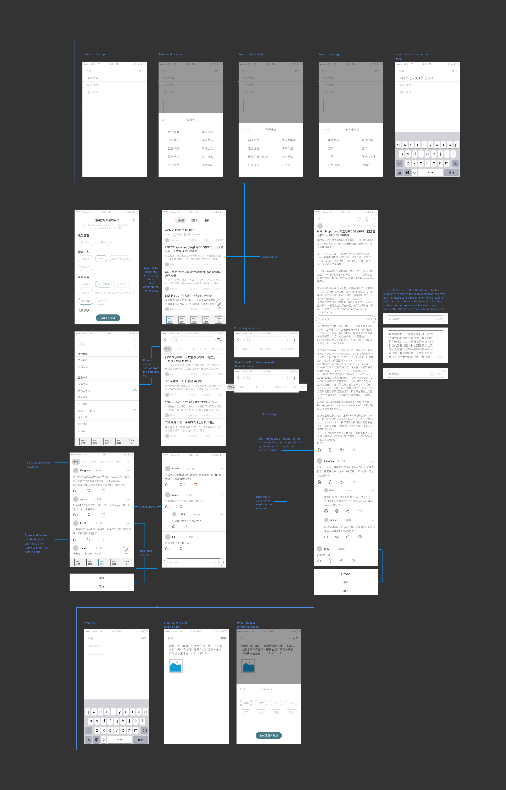

1point3acres is an organization dedicated to providing overseas Chinese with information on application of studying abroad, course study, employment, immigration and life in America.
In order to facilitate the use of mobile terminal users, 1point3acres copied the contents of the website BBS onto the app, mainly for information query, posting and discussion. After repeated experience of app and competitive product research, I came up with some ideas of my own. Of course, every product is the result of an elaborate design by a group of designers, and every design has a reason for being. Therefore, compared with external designers, only those who design the product know who their users are, their needs, the business goals of the company, and the current situation of their team. As an outsider, I can only experience the product as a user and show my own understanding and expectations.
My personal understanding:
According to my current experience of app, from the perspective of users, I think users want to do the following two things when they open the app:
- Browse:
the process of behavior includes searching information, viewing the content they followed or the replies related their own posts, interacting with others (reply/comment), browsing randomly.
- Post:
the behavior process includes selecting sections classification, writing content (posts/feeds) and adding images.
So, when browsing:
- Let users find the content they want as soon as possible
- Focus on tasks and reduce distractions while browsing
- Make the operation simple and direct
When post content:
- Let the section choose intuitive
- Make the writing process natural
Based on these ideas above, I would like to make the following changes on the current home page:
1. The original five tabs "latest", "feeds", "hot", "my", "topic" are at the top, among which only "feeds" is word limit and similar to microblog content. Which needs to present not specific categories and detailed information, but brief and impromptu content. So move the "feeds" to the bottom navigation, focus on displaying posts on the home page.
2. Put "my" tab that users most care about in the leftmost position that is opened by default, so that the first thing users can see is the content they are interested in. At the same time, users can switch to next two categories of "hot" and "latest" at will. I found that there was no difference between the "topics" section and the "hot" section, so I gave up the "topics" section for the time being.
3. As a platform with a huge content offering, search will be used frequently. Users can find the content they want by precise keywords search and classification fuzzy search . Therefore, combining search and section classification in one area can satisfy different search methods of users.
4. Move the "select interesting sections" in the upper left corner to the "personal center" in the lower right corner. Let users actively choose the section they are interested in when using the APP for the first time, and then they can enter the "personal center" for adjustment at any time.
5. Writing is a behavior that users can use all the time in BBS or content-sharing applications, and it should be encouraged. So it makes sense to place a floating action button (FAB) in the bottom right corner of the home page, which is easier for one-handed users than it was in the top right corner.
6. For gestures and motion, the bottom navigation, top TAB and FAB are hidden when swiping up the screen to increase screen space for content display and vice versa.
7. In the post presentation, I want to give users more visible content than just the title, so I add two lines of content under the post title to make it more attractive for users to click.
8. Remove the class tags from each post. The reason is that tags serve the classification of content, and the user's task during browsing is to focus on the content rather than tags, which are only needed when searching and publishing.
9. Remove the icon of browsing and replying to each post and replace it with text. The reason is that the repetition of the eye icon on screen is a bit uncomfortable. When the number of times for browsing or replying is more than 1000, it is simplified to 1.0k, so that the number does not differ too much in length and is more orderly visually. These auxiliary information should be visually attenuated.
Here is the redesigned mock-up:
1point3acres home page at present
1point3acres home page redesign
In addition, I tried to redesign wireframe and workflow for "search" and "feeds" navigation sections:

Design of mock-up and prototype::
Some post contents in the design come from 1point3acres
Finally, I have a design idea about the homepage of the official website.
Considering that 1point3acres covers multiple independent business sites, these businesses are highly relevant to BBS users, but most users don't know about them. In other words, the website lacks a page for users to comprehensively understand the features of these businesses, so I designed a page like this: